计算机视觉任务
分类
一图一标签
语义分割
像素级分类
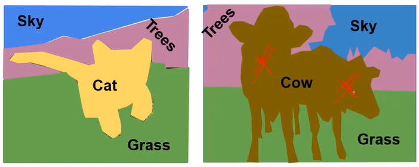
那怎么做语义分割呢？
滑动窗口
在一开始，人们想到了滑动窗口
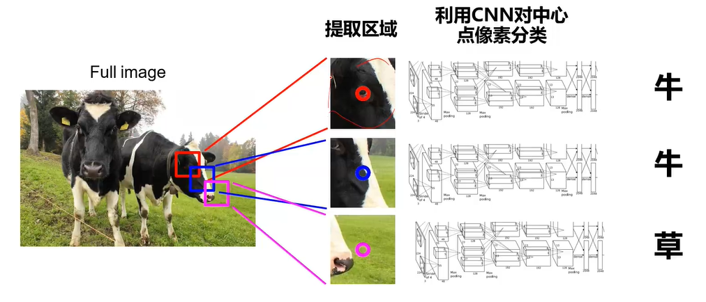
如上图所示，滑动窗口的思路是：对图中的每一个像素点，以该像素点为中心，取一个区域（手动指定窗口大小），对该区域利用卷积神经网络做分类，区域所属类别即为该区域对应像素点的所属类别。
尽管这是完全能用的吧，但由于一张图中的像素点个数有时候会特别多（比如高分辨率图片），此时，采用滑动窗口会带来较大的运算量，所以有了下面的全卷积网络方法。
全卷积
使用全卷积做语义分割的思路如下图所示
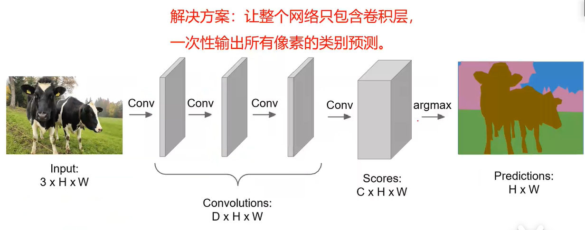
对于一张输入的图片，使用padding保证在卷积过程中得到特征图尺寸与输入图片尺寸一致，做多次卷积；在最后一次卷积时，使用C个卷积核以保证最后输出的通道数为C，这里的C是全部类别的个数；最后，对于每一个像素点，分别计算该像素点在通道维度上的取值(由于通道数等于类别数等于C，所以此时会有C个值)与标准答案(形式见下面的补充)之间的交叉熵，再把全部像素点计算得到的交叉熵相加，就得到了总的损失，接下来反向回传就可以更新参数，优化模型了。
【补充】这里每一个像素点所属类别的标准答案是一个数，将其做one-hot操作，得到的形式类似于[0,0,0,0,1,...,0,0]，共C个元素，它与每个像素点在通道维度上的元素个数一样，因此可以求一个交叉熵作为损失。
这样，每个位置的特征只计算一次，没有重复计算重叠区域，从而减少了运算量。
但是，由于特征图尺寸不变，而通道数在增加，这样可能导致显存爆炸（在之前的网络中，每次做卷积时，特征图尺寸变小，通道数在增加，而这里的特征图尺寸不变），所以可以再次改进：
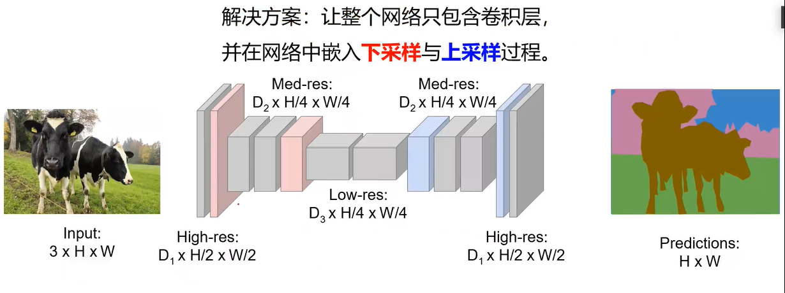
先进行下采样，提取高级语义特征；再进行上采样，映射回原尺寸。
下采样可以使用Pooling等方式实现，而上采样需要一些新的东西，下面来介绍下：
近邻法、补零法
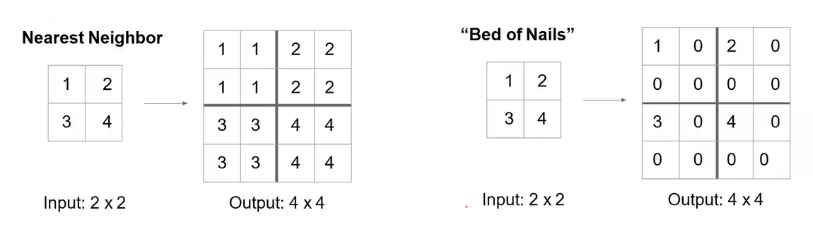
这两种方法人为因素较大，有可能添加了人为的噪声
index方法
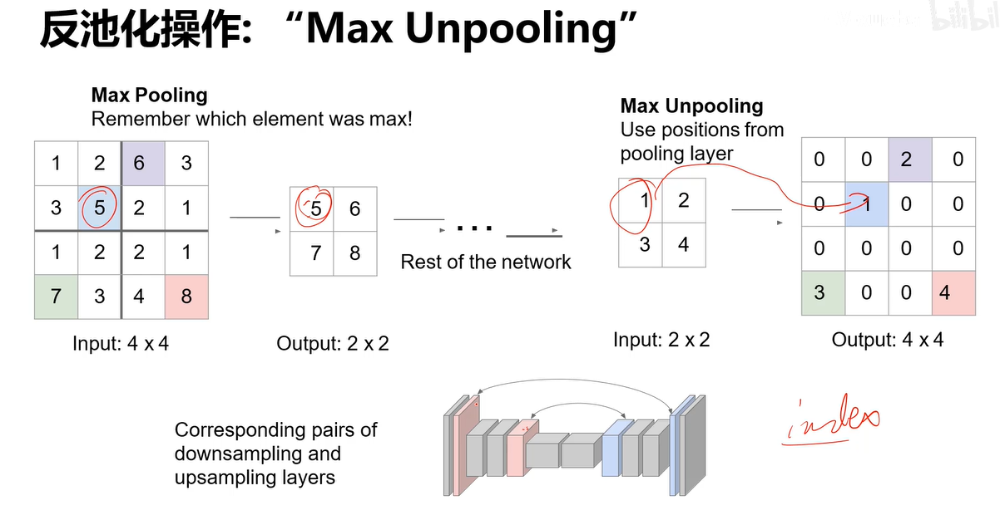
转置卷积
以上的方法在上采样（从小特征图到大特征图）时的规则是被写死的，而对于转置卷积来说，上采样的过程是可以被学习的。注意，转置卷积得到的”原图像”和真实的原图像不一定是一样的（只是尺寸一样，但存在些语义差别，因为学习的误差是不可避免的）。
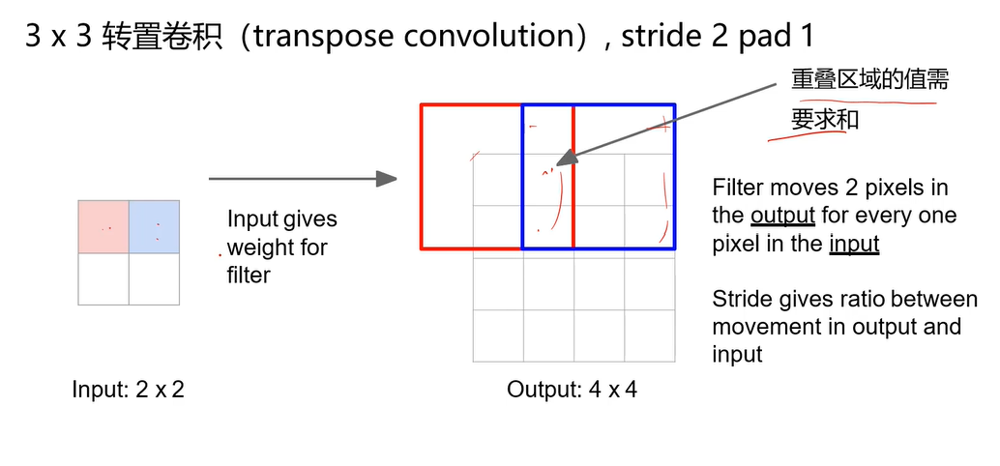
图中求和的部分便是需要学习的地方，具体来说，红色框和蓝色框的重叠部分是加和得到的，而该加和又是由蓝色框和红色框两部分决定的，它们分别对加和的贡献需要使用权重来度量，而该权重就是需要学习的参数，所以说这种上采样方法是需要学习的。
那么这里的权重怎么定义呢？
权重由卷积核的参数来定义！我们知道卷积核的参数是可学习的，卷积操作的加入，使得整个上采样过程也变得可学习起来。
下面是一个一维上采样的例子(2升为5)
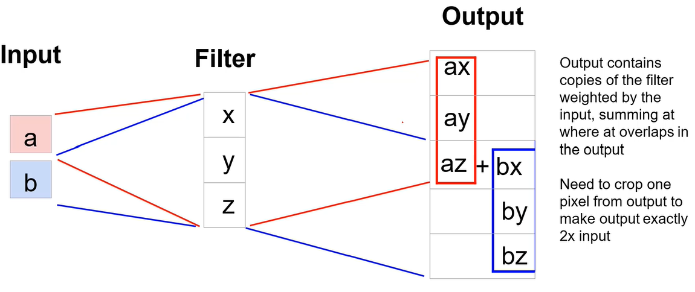
这里的重叠部分是az+bx，其中z与x是卷积核的参数，同时也作为权重来决定a与b对重叠区域的贡献程度。
那怎么实现转置卷积呢？
举个例子，卷积核为[x,y,z]，待处理的一维特征图为[a,b,c,d]，这里先采用padding=1以保证特征图尺寸不变，即[a,b,c,d]—>[0,a,b,c,d,0]。
卷积过程可以写为矩阵乘法：
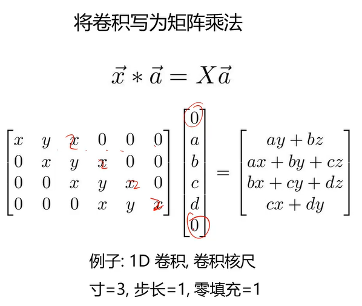
这里解释下卷积核组成的矩阵的行数和列数：
由于特征图尺寸为6，所以需要把卷积核组成的矩阵的列数补零填充成6；
同时，由于步长为1，所以卷积核组成的矩阵需要以步长为1 向右滑动，直至滑动至最大列数，因此这里行数为4
在做转置卷积的时候，只需要将卷积核组成的矩阵转置下，再乘以待升维的特征图，就得到了上采样的特征图
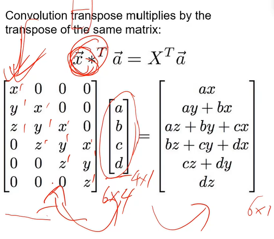
最后再丢一个步长为2的例子：
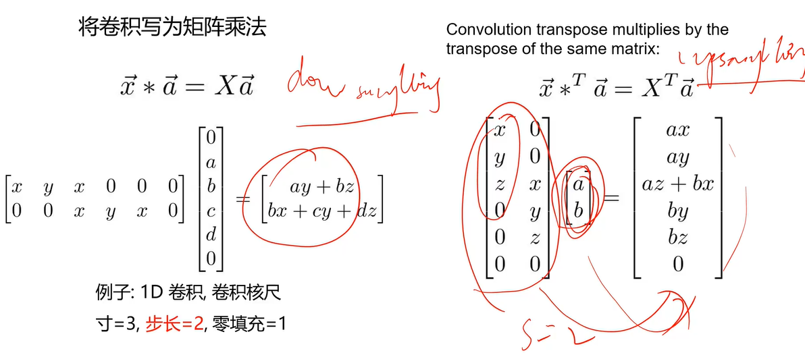
U-Net
在全卷积网络的基础上，除了像全卷积那样将下采样提取到的高层语义信息通过上采样传递给最后一层外，还直接把提取到的高层语义信息也传递给最后一层，从而减少了有用信息的损耗。
目标检测
检测图中每一个目标以及背景
实例分割
不同于语义分割，实例分隔要求即使是两个具有相同类别的物体（比如一张图中有两个狗），也要区分开这两个物体（比如这里要区分为狗1号和狗2号）
未完待续，随缘更新…